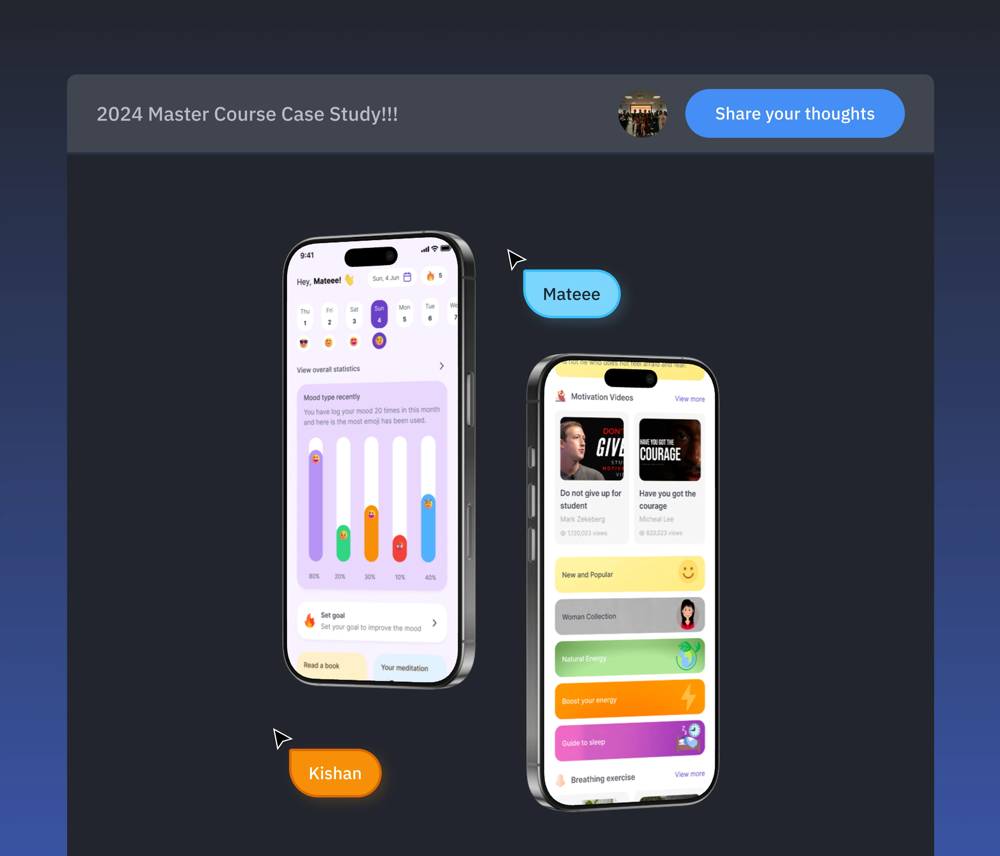
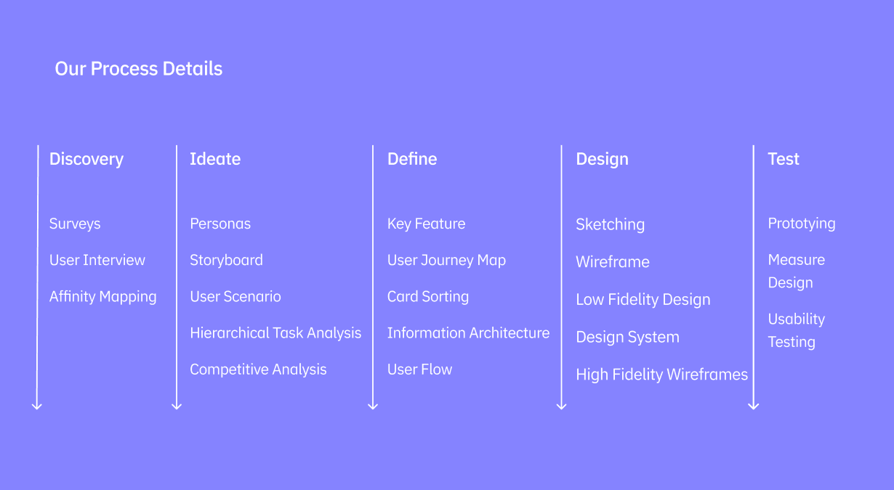
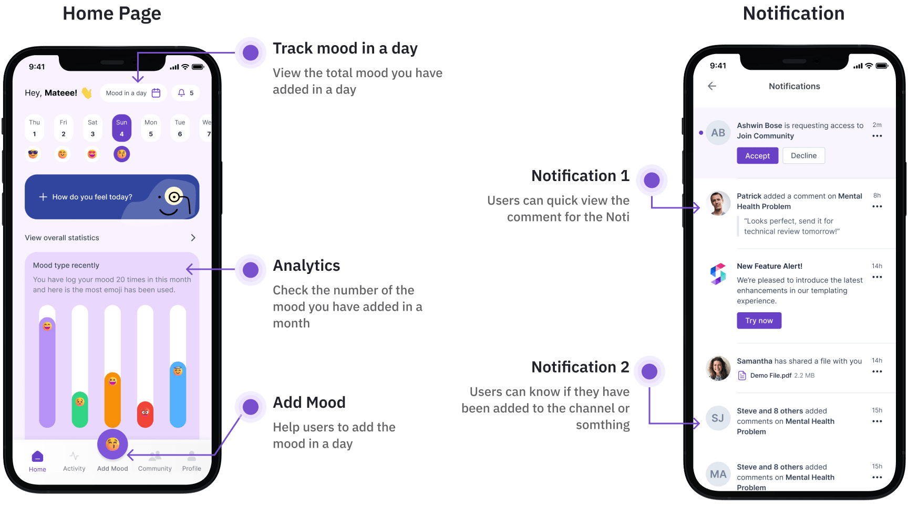
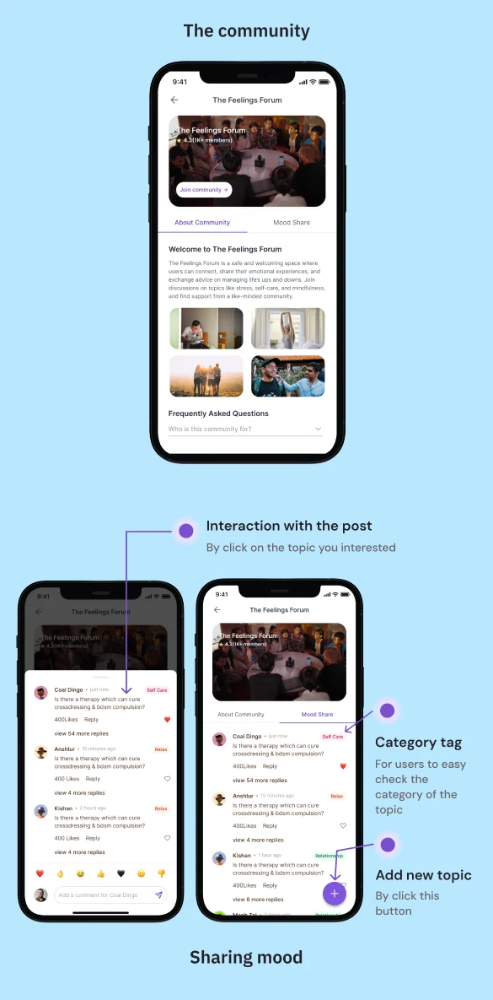
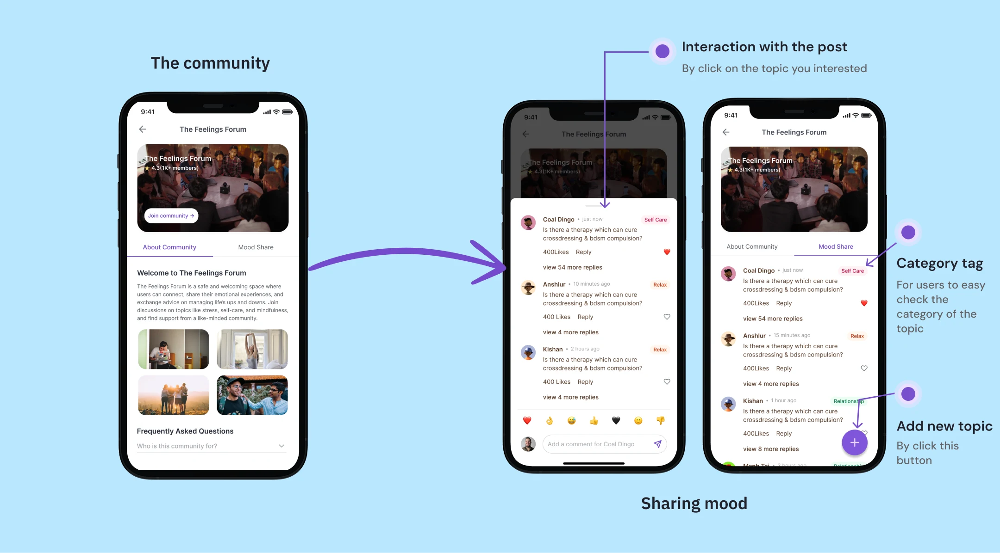
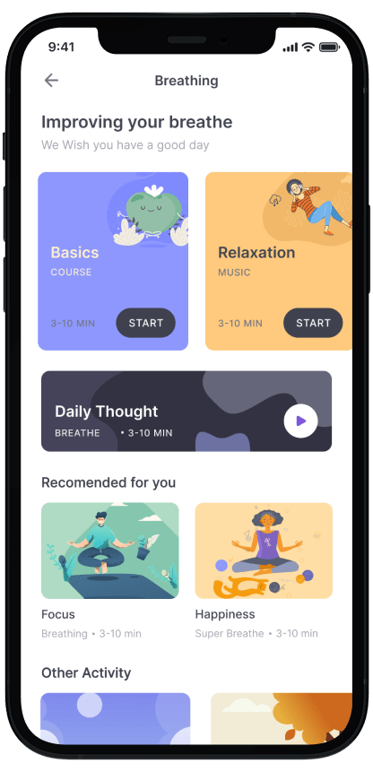
This screen shows when users click on Meditation on Activity Feature
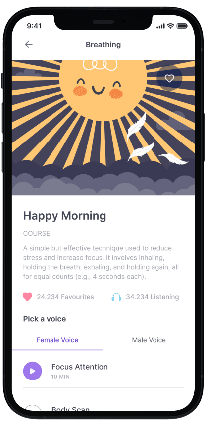
It can be music or a tutorial for users to meditate
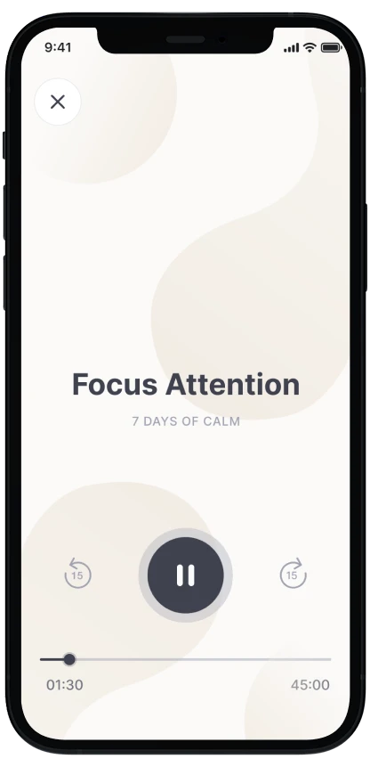
It can be music or a tutorial for users to meditate
Designing and coding for the app
Making sure both designer and developer were consistent in terms of design was tricky. The the difference in interactions and the way users would access each function was even trickier. Here’s an example of how we develop the idea from design
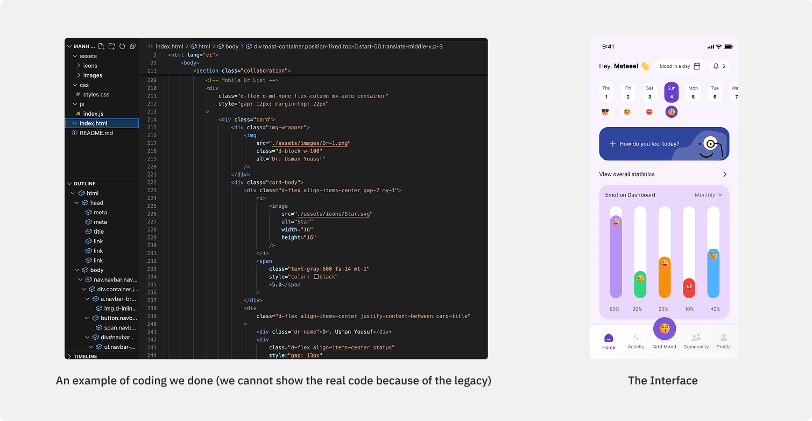
Usability (SUS) Test Results Analysis
Results gathered from 6 test participants show an average SUS Score of 70. The above-average (at the 50th percentile) is 68. That means a raw SUS above 68 is above average and below 68 is below average.
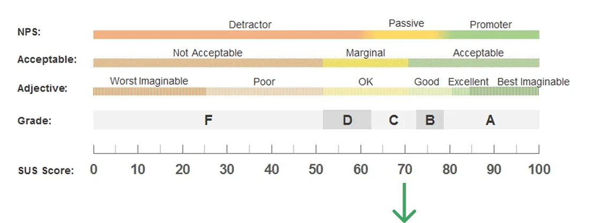
A SUS of 70 is at the 78th percentile (scoring better than 65% of the scores in the database). A raw SUS of 52 fails at the 20th percentile (scoring worse than 85% of the scores in the database).
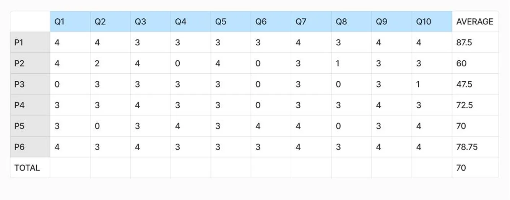
Usability Test Scenarios & Results #1
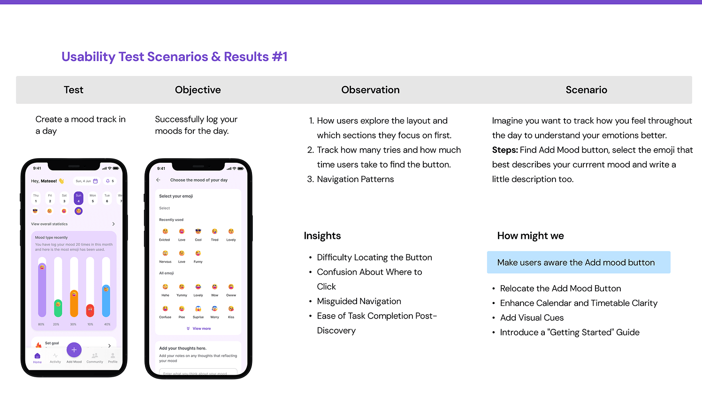
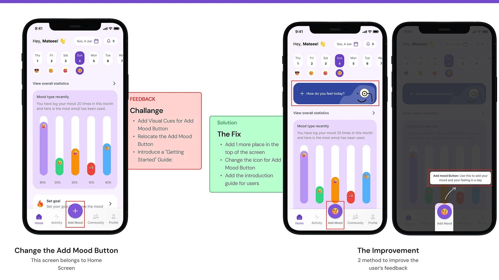
Usability Test Scenarios & Results #2
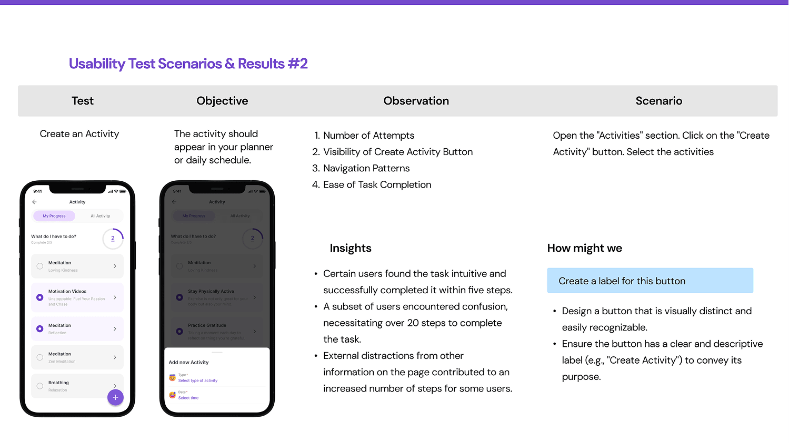
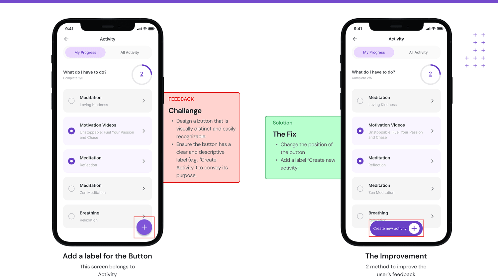
Usability Test Scenarios & Results #3
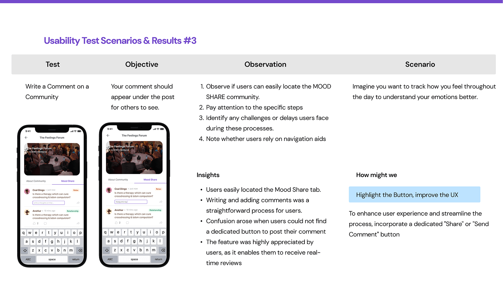
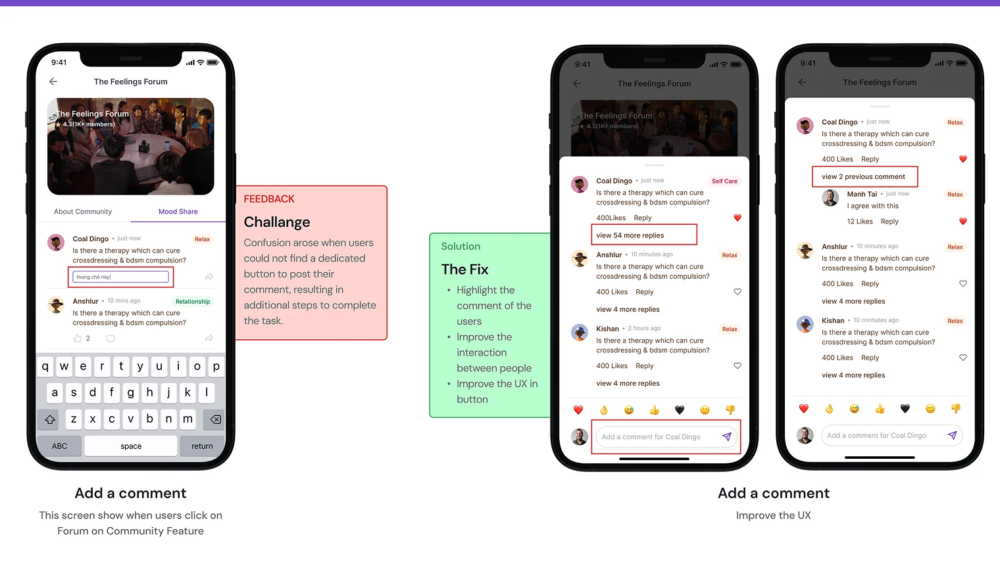